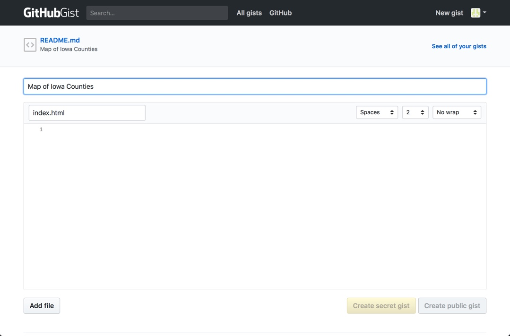

Sharing D3.js Code with Bl.ocks
LA 558 Tech Report
Bailey Hanson
This tech report is going to introduce you the technology used to share code (specifically D3.js) using GitHub Gist, and the Bl.ock viewer. Once I have introduced you to the different technology used will share the steps I took to make a bl.ock showing d3.js code of a map of Iowa.
D3.js is a JavaScript library for manipulating documents based on data. D3 helps you bring data to life using HTML, SVG, and CSS. D3’s emphasis on web standards gives you the full capabilities of modern browsers without tying yourself to a proprietary framework, combining powerful visualization components and a data-driven approach to DOM manipulation.
In GitHub, Gist is used to share code. It can be a simple snippet or a full app, Gist are a great way to share you work because every Gist is a fully forkable git repository. Bl.ocks (pronounced “Blocks”) is a simple viewer for sharing code examples hosted on GitHub Gist.
Mike Bostock, the developer of D3.js and Bl.ocks examples are particularly interesting. The D3.js library also has a huge host of examples hosted through GitHub, and bl.ocks.org. In order to share your own example without your own hosting, you can use Gist, and bl.ocks.org. The following steps will show you how to make that happen.
Steps:
- Login to your GitHub account and go to your Gist page. Mine is https://gist.github.com/baileyhanson, yours will be https://gist.github.com/ + your GitHub username.

- Click New gist
- The first file you add should be an index file. Type index.html in the file name box. Then copy and paste the code you want to share. You can copy a full HTML file including CSS, and JavaScript or add the files individually. It's up to you. Be sure that links to different libraries (such as d3.js) are given in absolute terms, e.g. to the official d3 site, and not to a file in your folder. Keep adding files by clicking Add file and pasting in the code until you have supplied everything required for the graphic. In my example I only include the index.html file.
- Now add a README file. Click Add file, and type in README.md and add a description of what the code and graphic you are sharing does.
- Fill in a Gist description (at the top of the page) before clicking Create public gist.
- When the public gist is created a new page will load with the information you just entered. The end of the URL has a unique id. This unique id will be used to load the example in the bl.ocks view. My unique id is - 6ee0152df89aace50abfe627ee6c0bdc.
- Go to your bl.ocks page. http://bl.ocks.org/ + your GitHub username. Mine is http://bl.ocks.org/baileyhanson/. You should see your first bl.ock listed below your username.
- The exact location of the bl.ock is at http://bl.ocks.org/ + your username/your unique id. Mine is http://bl.ocks.org/baileyhanson/6ee0152df89aace50abfe627ee6c0bdc.
- These are the only steps needed to share your code, but two other optional files are needed (thumbnail.png, and preview.png) if you'd like a graphic representation of the code in your bl.ocks page. The only way to add these files is through the command line. The rest of these steps are for Mac only.
- To add a thumbnail of your bl.ock to your bl.ocks page you first need to create a thumbnail image by taking a screen shot and cropping the image to 230px wide by 120px high. Name the image thumbnail.png and remember where it's saved.
- Open Terminal on Mac
- Type git clone https://gist.github.com/baileyhanson/6ee0152df89aace50abfe627ee6c0bdc and hit enter (you will want to use the URL to your gist created after step 5).
- A folder will be created with the name of the unique id of your gist and it will contain all the files that you've uploaded to GitHub Gist. Mine is called 6ee0152df89aace50abfe627ee6c0bdc.
- Copy your thumbnail.png file into your unique id folder. If you're not sure where the folder is created, you can do a search for the unique id in Finder.
- In terminal type cd 6ee0152df89aace50abfe627ee6c0bdc (whatever your unique id is) and hit enter.
- Type git add thumbnail.png and hit enter.
- Type git commit –m 'Add thumbnail' and hit enter.
- Type git push and hit enter. Terminal should look similar to the image below when all steps are complete.
- Check that your thumbnail was successfully added to your gist by checking the gist at https://gist.github.com/ + your username/your unique id. Mine is https://gist.github.com/baileyhanson/6ee0152df89aace50abfe627ee6c0bdc.
- To add a preview image to the bl.ock, you will complete steps 10-19 again. Instead of creating an image that's 230px by 120px, your preview.png can be up to 960px by 680px. Complete all the terminal comands replaceing thumbnail.png with preview.png.
- Add an image tag to your index.html with the correct width and hieght of your preview.png. See image below for example.
- Your final results should look similar to the image below.